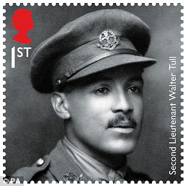
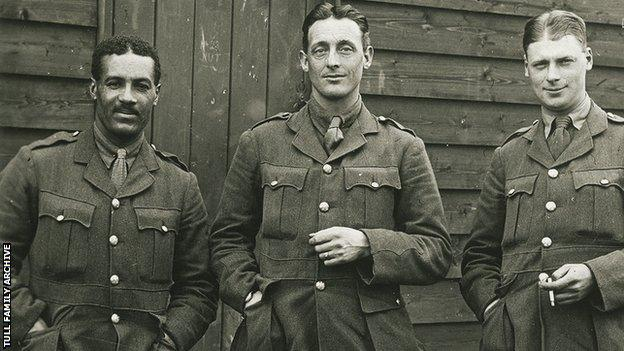

Walter Daniel John Tull
Born 28th April 1888Died 25th March 1918
Lieutenant Walter Tull was the first British-born black army officer and the first black officer to lead white British troops into battle. He was recommended for the Miltary Cross He also was a professional footballer and was signed to play for Rangers F.C. after the war. He was Killed in action in 1918 during the First Battle of Bapaume , WW1.
Early Years
- Born in Folkstone, Kent. Of mixed heritage, Afro-caribbean father Daniel Tull and English mother Alice Palmer.
- His paternal grandfather was a slave in Barbados.
- Both his parents died in 1897, leaving 5 children .
- From age 9 he was raised in a orphanage.
- His brother Edward was adopted, he later qualified a dentist becoming the first mixed heritage person to practise this profession in thr UK.
Football Career
His professional football career began after he was spotted playing for top amateur club, Clapton F.C.. He had signed for Clapton in October 1908, reportedly never playing in a losing side. By the end of the season he had won winners' medals in the FA Amateur Cup, London County Amateur Cup and London Senior Cup. In March 1909 the Football Star called him "the catch of the season".At Clapton, he played alongside Clyde Purnell and Charlie Rance.
At the age of 21, Tull signed for Football League First Division team, Tottenham Hotspur, in the summer of 1909, after a close-season tour of Argentina and Uruguay, making him the first mixed-heritage professional footballer to play in Latin America. Tull made his debut for Tottenham in September 1909 at inside forward against Sunderland and his home Football League debut against FA Cup-holders, Manchester United, in front of over 30,000. His excellent form in this opening part of the season promised a great future. Tull made only 10 first-team appearances, scoring twice, before he was dropped to the reserves. This may have been due to the racial abuse he received from opposing fans, particularly at Bristol City, whose supporters used language "lower than Billingsgate", according to a report at the time in the Football Star newspaper. The match report of the game away to Bristol City in October 1909 by Football Star reporter, "DD", was headlined "Football and the Colour Prejudice", possibly the first time racial abuse was headlined in a football report. "DD" emphasised how Tull remained professional and composed despite the intense provocation; "He is Hotspur's most brainy forward ... so clean in mind and method as to be a model for all white men who play football ... Tull was the best forward on the field." However, soon after, Tull was dropped from the first team and found it difficult to get a sustained run back in the side.
Further appearances in the first team (20 in total with four goals) were recorded before Tull's contract was bought by Southern Football League club Northampton Town on 17 October 1911 for a "substantial fee" plus Charlie Brittain joining Tottenham Hotspur in return. Tull made his debut four days later against Watford, and made 111 first-team appearances (105 in the League), scoring nine goals for the club. The manager Herbert Chapman – also a Methodist – was a former Spurs player and had played as a young man with Arthur Wharton at Stalybridge Rovers; he went on to manage both Huddersfield Town and Arsenal to FA Cup wins and League championships.
In 1940, it was reported in an article in the Glasgow Evening Times about Tull being the first "coloured" infantry officer in the British Army, that he had signed to play for Rangers F.C. after the war. Rangers have confirmed that Tull signed for them in February 1917, while an officer cadet in Scotland at Gailes, Ayrshire.
Army Officer
After the First World War broke out in August 1914, Tull became the first Northampton Town player to enlist in the British Army, in December of that year. Tull served in the two Football Battalions of the Duke of Cambridge's Own (Middlesex) Regiment – the 17th and 23rd – and also in the 5th Battalion. He rose to the rank of lance sergeant and fought in the Battle of the Somme in 1916.
When Tull was commissioned as a second lieutenant on 30 May 1917, he became one of the first mixed-heritage infantry officers in a regular British Army regiment, when the 1914 Manual of Military Law excluded soldiers that were not "natural born or naturalised British subjects of pure European descent" from becoming commissioned officers in the Special Reserve.
With the 23rd Battalion, Tull fought on the Italian Front from 30 November 1917 to early March 1918. He was praised for his "gallantry and coolness" by Major-General Sydney Lawford, General Officer Commanding 41st Division, having led 26 men on a night-raiding party, crossing the fast-flowing rapids of the Piave River into enemy territory and returning them unharmed, and in a letter of condolence to his family.The commanding officer of the 23rd Battalion, Major Poole and his colleague 2Lt Pickard both said that Tull had been put forward for a Military Cross. Pickard wrote "he had been recommended for the Military Cross, and certainly earned it." However, the Ministry of Defence has no record of any recommendation but many records were lost in a 1940 fire. It would have been against army regulations for serving officers to inform an officer's next of kin that their relative had been recommended for, and refused, an honour; it was a court-martial offence. Tull and the 23rd Battalion returned to northern France on 8 March 1918. He was killed in action near the village of Favreuil in the Pas-de-Calais on 25 March during the First Battle of Bapaume, the early stages of the German Army's Spring Offensive. His body was never recovered, despite the efforts of, among others, Private Tom Billingham, a former goalkeeper for Leicester Fosse to return him to the British position while under fire.
Legacy
In the history of mixed-heritage footballers in Britain, Tull may be mentioned alongside Robert Walker of Third Lanark, Andrew Watson, an amateur who is credited as the earliest black international football player winning his first cap for Scotland in 1881, Arthur Wharton, a goalkeeper for several clubs including Darlington and became the first mixed-heritage professional in 1889, John Walker of Hearts and Lincoln who died aged 22, the Anglo-Indian Cother brothers, Edwin and John, who began their careers at Watford in 1898 and W. G. Clarke who played for Aston Villa and Bradford City in the Edwardian era.
From around 2006, campaigners including the then Northampton South MP, Brian Binley, and Phil Vasili, who has researched Tull since the early 1990s, called for a statue to be erected in his honour at Dover and for him to be posthumously awarded the Military Cross. However, as the Military Cross was not authorised to be awarded posthumously until 1979, and the change did not include any provision for retrospective awards, this would not be possible without a change in the rules. The campaigners felt this would be justified given that the army broke the rules in allowing Tull a commission at a time when the army was desperately short of officers. If he had been recommended for a Military Cross, his status as an officer of non-European descent might have meant to award him the honour would validate his status, leading to more mixed-heritage officers being commissioned.
Memorials
Folkestone War Memorial
Dover war memorial
Tull is commemorated on Bay 7 of the Arras Memorial which commemorates 34,785 soldiers who have no known grave, who died in the Arras sector.
His name was added to his parents' gravestone in Cheriton Road Cemetery, Folkestone. His older brother William, of the Royal Engineers, died in 1920, aged 37, and is buried in the cemetery with a CWGC headstone so his death was recognised as a result of his war service.
Tull's name appeared on the war memorial at North Board School, Folkestone, unveiled on 29 April 1921. He is named on the Folkestone War Memorial, at the top of the Road of Remembrance in Folkestone, and in Dover his name is on the town war memorial outside Maison Dieu House, and on the parish memorial at River.
Walter Tull memorial at the Sixfields Stadium, Northampton
On 11 July 1999, Northampton Town F.C. unveiled a memorial wall to Tull in a garden of remembrance at Sixfields Stadium. The text, written by Tull's biographer, Phil Vasili, reads:
Through his actions, W. D. J. Tull ridiculed the barriers of ignorance that tried to deny people of colour equality with their contemporaries. His life stands testament to a determination to confront those people and those obstacles that sought to diminish him and the world in which he lived. It reveals a man, though rendered breathless in his prime, whose strong heart still beats loudly.
A road behind the North Stand (The Dave Bowen Stand) at Sixfields Stadium is named Walter Tull Way, and a public house, adjacent to the stadium, bears his name.
On 28 July 2004, Tottenham Hotspur and Rangers contested the "Walter Tull Memorial Cup". Rangers won the Cup, defeating Spurs 2–0 with goals from Dado Pršo and Nacho Novo.
In 2010, a planning application to erect a bronze memorial statue of Tull in Geraldine Mary Harmsworth Park close to the Imperial War Museum in London, was refused by Southwark London Borough Council.
The Royal Mint included a £5 coin honouring Tull in the introductory First World War six-coin set, released in 2014.
On 21 October 2014, a blue plaque was unveiled at 77 Northumberland Park, London N17, on the site of the house where Tull lived before the war, close to the White Hart Lane ground. The plaque was provided by the Nubian Jak Community Trust and was unveiled by former Spurs striker Garth Crooks who described Tull as an "amazing man," whose recognition had been "a long time coming".
On 4 July 2017, five statues including one of Tull were unveiled in the courtyard of Northampton Guildhall. The bronze installations were commissioned by Northampton Borough Council from sculptor Richard Austin.
On 25 March 2018, to commemorate the centenary of his death, Rushden & District History Society unveiled a blue plaque at 26 Queen Street, Rushden where he lodged while playing at Northampton Town.
In September 2018, to mark the centenary of the end of the First World War, Royal Mail produced a set of stamps, one of which features Tull.
On Remembrance Sunday 2018, the people of Ayr, Scotland, came together to etch a large sand portrait of Tull into the town's beach as part of 'Pages of the Sea', a nationwide public art project curated by Oscar-winning filmmaker Danny Boyle.
In October 2020, as part of Black History Month, the Royal Mail have painted a postbox black in Glasgow to honour Tull.